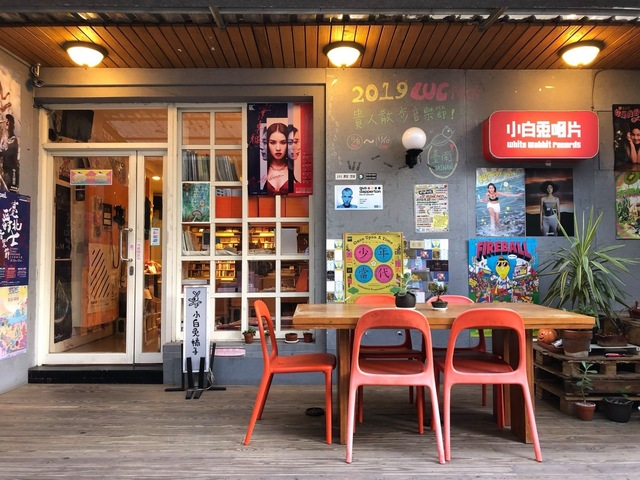
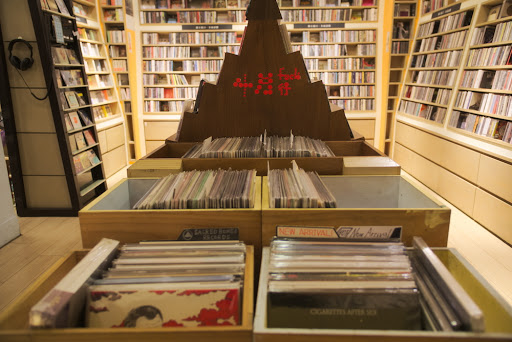

小白兔唱片是由現任阿飛西雅Bass手－KK所創辦，在1999年決定開一家同時有唱片行、也發行唱片的音樂廠牌。2002年小白兔唱片首次邀請國外樂團Explosions In The Sky來台灣演出，並在當年成立小白兔唱片的獨立廠牌，發行薄荷葉《涼》以及壞女兒《沒有毛的熊》。2003年KK認為台灣的獨立樂團越來越多，必須要有一個集體的宣傳和企劃，於是發行了小白兔唱片合輯《蘿蔔一代》，之後繼續推出《蘿蔔二代》、《蘿蔔三代》。
位在師大商圈的「小白兔唱片」，經營範疇包含唱片行、代理、發行、策展，多以獨立音樂為大宗。販售的除了是唱片，其實也是某種抽象的文化、人味、感覺。也因此小白兔非常重視與樂迷們的互動，即使客人想買一張蔡依林，也會二話不說訂購，透過層層疊疊的互動，建立綿密情感，那是再先進的軟體都無法取代的事，因為聽音樂的始終是「人」。
地址：台北市大安區浦城街21巷1-1號
營業時間：周一至周日/11:00–21:00
小白兔藏身在師大巷弄裡，從捷運台電大樓站3號出口值走一個街區後，望由手邊巷子一直直走就可以到達!
其他文章...
1 / 9

永豐Legacy Taipei 傳音樂展演空間
2 / 9

The Wall Live House
3 / 9

西門河岸留言
4 / 9

小地方
5 / 9

Revolver
6 / 9

Pipe Live Music
7 / 9

WITCH HOUSE 女巫店
8 / 9

三創Clapper Studio